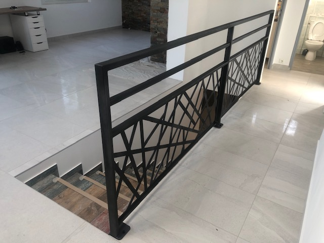
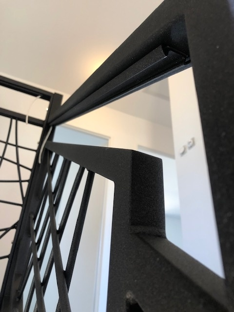
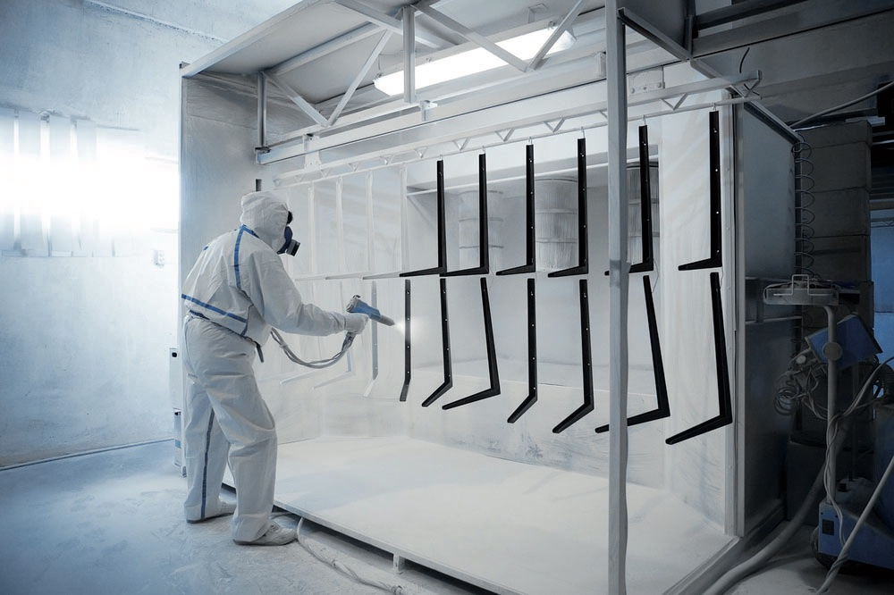

La résistance
La résistance aux chocs et à la corrosion pour un résultat durable dans le temps.
La Seyne-sur-Mer — Var (83)
Atelier de finition métal à La Seyne-sur-Mer (Var). Sablage et thermolaquage pour particuliers, ferronniers, métalliers et architectes.
Nous ne cessons de croître, d'apprendre et de nous améliorer et nos partenaires ne cessent d'augmenter. Riche de notre expérience et de notre savoir-faire, nous vous proposons les meilleures solutions adaptées à tous vos besoins de traitement de vos ouvrages ou vos pièces techniques.
La résistance aux chocs et à la corrosion pour un résultat durable dans le temps.
L'uniformité du revêtement — absence de coulure, de sur-épaisseur — pour un rendu impeccable.
La dureté de surface, la tenue des couleurs, le large choix de teintes du nuancier RAL.
La possibilité d'effets spéciaux tels que : effets rouillés, textures ou sablés.
Le thermolaquage est un procédé de peinture (traitement de surface) qui consiste tout d'abord à appliquer une peinture poudre (epoxy, polyester, mixte epoxy-polyester) par pistolage électrostatique. Celle-ci va ensuite être polymérisée dans un four de cuisson à 200°C afin d'obtenir un film de peinture. Cette étape durcit la poudre et la stabilise ainsi.
Remarque : le temps et la température varient en fonction de la densité et de la qualité de la pièce.Toutes les pièces métalliques, qu'elles soient en acier, aluminium, inox, acier galvanisé, fonte… Des pièces neuves ou à rénover, des petites ou des grandes… Des portails, des grilles, des tôles, des rambardes, du mobilier urbain, des verrières, des salons de jardin, des radiateurs…
Le sablage-grenaillage permet de remettre parfaitement à nu le matériau à décaper. La technique consiste à projeter un abrasif avec une buse à air comprimé haute pression sur le matériau à décaper. Le sablage grenaillage permet de : nettoyer et préparer les surfaces métalliques, éliminer la rouille même en profondeur, éliminer les peintures anciennes.
En fonction des produits utilisés, la durée de vie oscille entre 7 et 20 ans. Il s'agit d'un constat moyen qui varie en fonction de l'environnement et des conditions d'utilisation. Chez STV, nous mettons tout notre savoir-faire pour faire durer un maximum de temps votre produit une fois sorti de notre atelier.
Chaque pièce qui sort de notre atelier suit exactement le même protocole — décapage, application, polymérisation — pour garantir une finition durable.
Mise à nu du métal par projection d'abrasif à haute pression. Élimination de la rouille, des peintures anciennes et préparation de la surface pour une accroche parfaite.
Pulvérisation électrostatique de la poudre (époxy, polyester ou mixte) en cabine dédiée. La couleur RAL choisie est appliquée uniformément, sans coulure ni sur-épaisseur.
Cuisson de la pièce à 200 °C pour stabiliser la peinture. Le résultat : un revêtement dur, brillant ou mat selon la teinte, qui tient 7 à 20 ans selon l'environnement.
STV 83 intervient autant en direct chez les particuliers qu'en sous-traitance pour les professionnels du métal dans le Var et toute la région PACA.
Portail rouillé, garde-corps, salon de jardin, jantes, mobilier… Devis gratuit sur photo WhatsApp en 24 h.
Sous-traitance finition pour vos pièces de ferronnerie d'art, escaliers, rampes, structures. Cadence atelier adaptée aux séries.
Pour vos projets sur-mesure : verrières, garde-corps haute exigence, mobilier d'extérieur. Conseils sur teintes RAL et finitions.
Mobilier urbain, candélabres, garde-corps, structures. Travail pour communes, bailleurs et entreprises de la métropole toulonnaise.
Pièces finies dans notre atelier — pour des particuliers comme pour des ferronniers et architectes. La galerie est régulièrement enrichie avec nos derniers chantiers et nos vues d'atelier.






Plus de 180 teintes disponibles. Survolez une couleur pour afficher son nom.
Aucune couleur trouvée pour cette recherche.
Avis vérifiés sur Google — note moyenne 4,8/5 · voir tous les avis
« STV 83 a fait du bon travail pour un portail bien abîmé. Ils ont pris le temps d'ajuster le portail repeint. Et en plus ils sont sympathiques et pas grincheux. »
« Le thermolaquage fait par STV 83 pour les portes de notre cuisine d'été est parfait. Le travail est soigné et l'accueil chaleureux. Nous recommandons vivement. »
« Je viens de faire repeindre un cadre et des jantes de mobylette, je suis très satisfait du travail réalisé par STV 83, une entreprise serviable et professionnelle. »
« STV 83 a fait un super travail sur ma sculpture métallique. Personnes sympathiques, à l'écoute de nos attentes, travail et finitions parfaites. Je recommande pour tout ouvrage de sablage et thermolaquage. »
Envoyez-nous une photo de votre pièce, on vous rappelle.